Hollow Knight & Silksong 3D Prints
36 free designs by Spencer Mann (Spencermann) — cosplay masks, needles, Dreamer masks, tools, and Hallownest fountains.
Popular Hollow Knight downloads
Looking for a Hornet Mask, Hornet's Needle, or a full Hollow Knight cosplay build? This collection gathers every free MakerWorld model I publish for Hollow Knight and Silksong — including the Pure Vessel Mask, Grimm Mask, Dreamer masks, Mantis Lord gear, working City of Tears fountains, and printable Hollow Knight Nail props. Each design includes Bambu Lab print profiles and is the original free release from @spencermann on MakerWorld.
All Hollow Knight 3D print models
Flagship Hollow Knight 3D prints
- Large Hornet Mask (Silk Song Hollow Knight) Adult
- Hornet Mask (Hollow Knight) (Teen/Child Sized)
- Hornet's Needle Big (Silk Song Adult Cosplay)
- The Pure Vessel Mask (from Hollow Knight)
- The Nail (Hollow Knight Sword - Cosplay TPU)
- Hollow Knight Mask Adult Size Updated Cosplay
- The Grimm Mask - Hollow Knight adult & child size
- Zote the Mighty Mask - Hollow Knight
All 36 Hollow Knight 3D prints
- City of Tears Pond Water Fountain Functional
- Cogfly Silksong (hollow knight) tool w/ hinge wing
- Dreamer Harrah the Beast Mask - Hollow Knight
- Dreamer Lurien the Watcher Mask - Hollow Knight
- Dreamer Monomon the Teacher Mask - Hollow Knight
- Grimmchild - Hollow Knight tool
- Hollow Knight License Plate Frame - Bell Beast
- Hollow Knight Mask (child/teen size)
- Hollow Knight Mask Adult Size Updated Cosplay
- Hornet Christmas Ornament (Silksong) -All printers
- Hornet Mask (Hollow Knight) (Teen/Child Sized)
- Hornet's Needle (Hollow Knight cosplay)
- Hornet's Needle Big (Silk Song Adult Cosplay)
- Lace Mask from Silksong (Hollow Knight) Halloween
- Lace's Sword or pin (Silksong boss fencing sword)
- Large Hornet Mask (Silk Song Hollow Knight) Adult
- Lumafly Lantern Hollow Knight
- Mantis Claw (Hollow Knight Equipment)
- Mantis Lord Lance - Hollow Knight 1/2" PVC Pipe
- Mantis Lord Mask Adult size (scale down for child)
- Pure Vessel Armor Shoulder Pauldrons Hollow Knight
- Pure Vessel Nail (Hollow Knight Boss Sword - TPU)
- Pure Vessel Sword (Large Size 52") - Hollow Knight
- Shakra Mask (Silksong Hollow Knight cosplay)
- Sherma from Silksong - Bell, pin and mask
- Sherma Hat from Silksong
- Silkshot - Hornet Silksong Tool - Hollow Knight
- The Grimm Mask - Hollow Knight adult & child size
- The Nail (Hollow Knight Sword - Cosplay TPU)
- The Pale King or Wyrm- Hollow Knight
- The Pure Vessel Mask (from Hollow Knight)
- Trobbio Mask - Silk Song Boss Adult Sized
- Twisted Bud - Silk Song TPU Stress Ball
- Wingmould - Hollow Knight Creature -Optional Light
- Working City of Tears Water Fountain Hollow Knight
- Zote the Mighty Mask - Hollow Knight
Latest Models
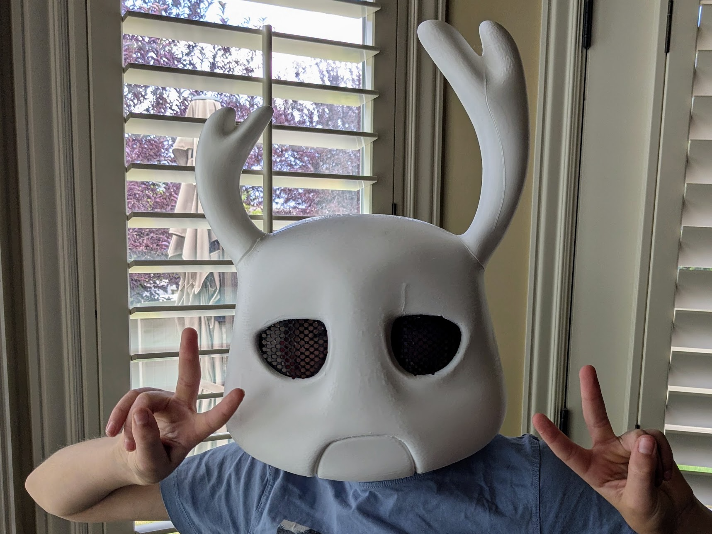
Zote the Mighty Mask - Hollow Knight
This one is for Squidward who relentlessly pushed for me to make the model, and then was so grateful when I got started! I hope you enjoy it! I designed this mask a bit different from my others and I am happy with the outcome. Tags: Hollow Knight, hollow knight, zote, mask.
View print & download →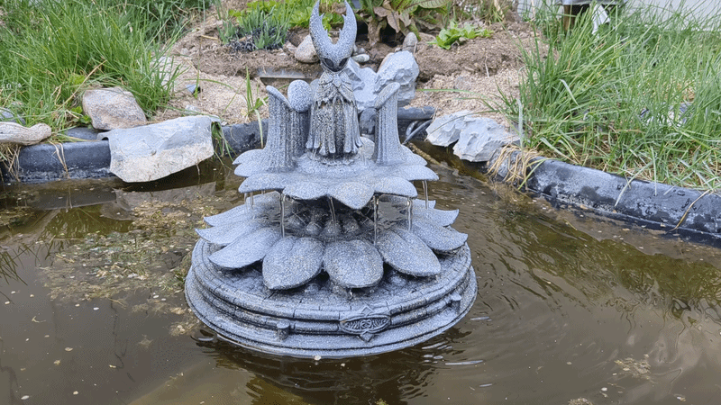
City of Tears Pond Water Fountain Functional
This is my pond sized version of the city of tears fountain. It is scaled for my H2D printer and prints in 2 parts to reduce the support issues. The fountain has a female ½ adapter on the bottom of the top half that a standard irrigation pipe (in the US can connect with).
View print & download →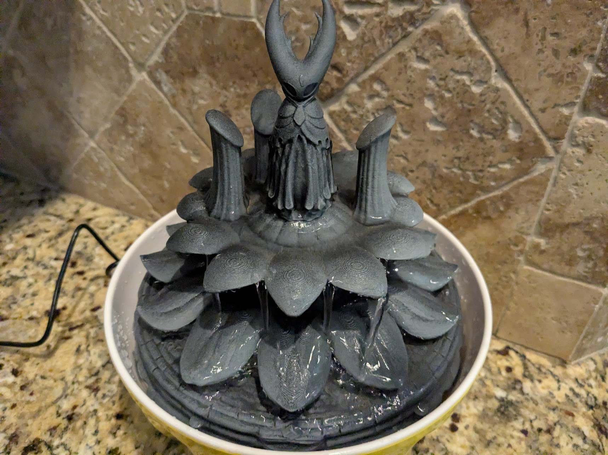
Working City of Tears Water Fountain Hollow Knight
I have been working on this for a while, and am excited to share it with you. This is the iconic fountain from City of Tears in the Hollow Knight video game. It allowed me to combine two major themes for me Hollow Knight and working water fountain design. Tags: hollow knight, Hollow Knight, fountain, water.
View print & download →Popular Models
Sorted by MakerWorld likes.

Large Hornet Mask (Silk Song Hollow Knight) Adult
Seven months ago I built the Hornet mask from Hollow Knight, with the release of Silk Song that mask has gotten more attention than any of my other designs. My original design was made for my kids and fit them perfectly, but was a bit too small to fit on an adults head. Tags: hornet, silk song, Silksong, silksong.
View print & download →Hornet Mask (Hollow Knight) (Teen/Child Sized)
This is the Hornet mask from Hollow Knight. I used actual video game images (2d) to determine the dimensions to try and get it as accurate as possible. Tags: hollow knight, hornet, mask, cosplay.
View print & download →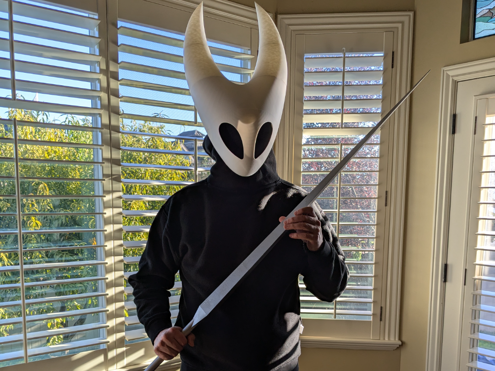
Hornet's Needle Big (Silk Song Adult Cosplay)
This is an updated larger version of Hornet's Needle from Silksong or Hollow Knight. My original version was designed for a teen or younger (link below) and used conduit pipe as the core. Tags: Hornet, hornet, silksong, Silksong.
View print & download →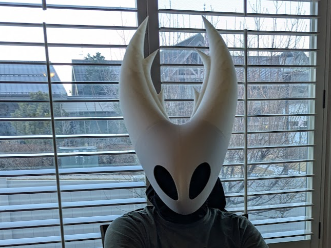
The Pure Vessel Mask (from Hollow Knight)
This is an adult sized mask of the “Pure Vessel” from the video game Hollow Knight. Tags: hollow knight, pure vessel, mask, cosplay.
View print & download →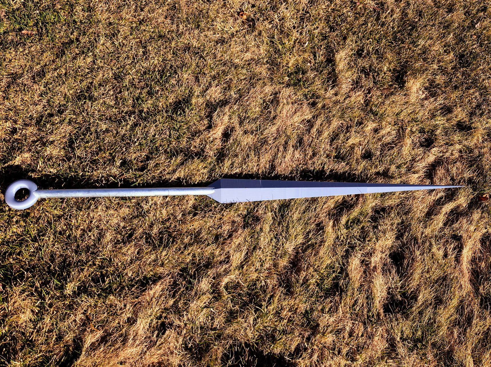
Hornet's Needle (Hollow Knight cosplay)
This is Hornet's Needle from Hollow Knight. I designed this based off actual video game images and measured it to try and get the right proportions for the components (the actual blade maybe bigger if scaled with the actual holder, I tried to scale it based off the mask I…
View print & download →
The Nail (Hollow Knight Sword - Cosplay TPU)
The Nail from Hollow Knight. I designed this sword to compliment the masks and other weapons I have designed for Hollow Knight. I always try to base the creations as closely as I can on the video game art, in this case the sword is really not that big of a weapon. Tags: hollow knight, sword, video game, COSPLAY.
View print & download →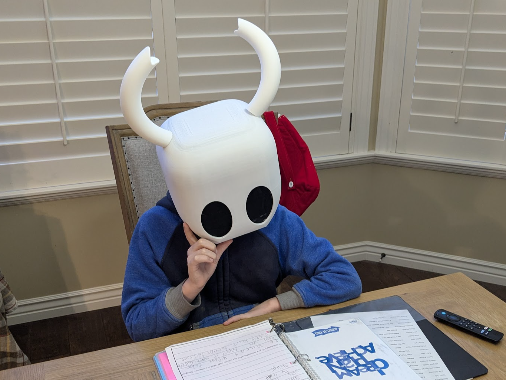
Hollow Knight Mask (child/teen size)
There is a bit of a Hollow Knight obsession at my house and I thought it would be a good opportunity for me to learn some new skills in OnShape. I searched online and learned that all the other models are garbage so I made my own (my search was not extensive and heavily biased).
View print & download →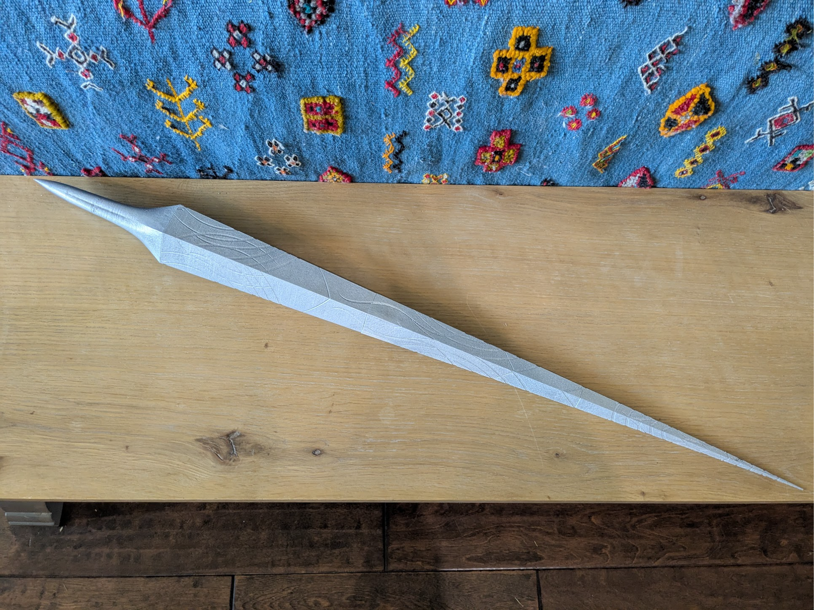
Pure Vessel Nail (Hollow Knight Boss Sword - TPU)
I have been creating a variety of Hollow Knight masks and swords over the last year. Someone pointed out to me that I have the Pure Vessel mask, but not the sword so I put together this model to resolve that. Tags: sword, hollow knight, silksong, pure vessel.
View print & download →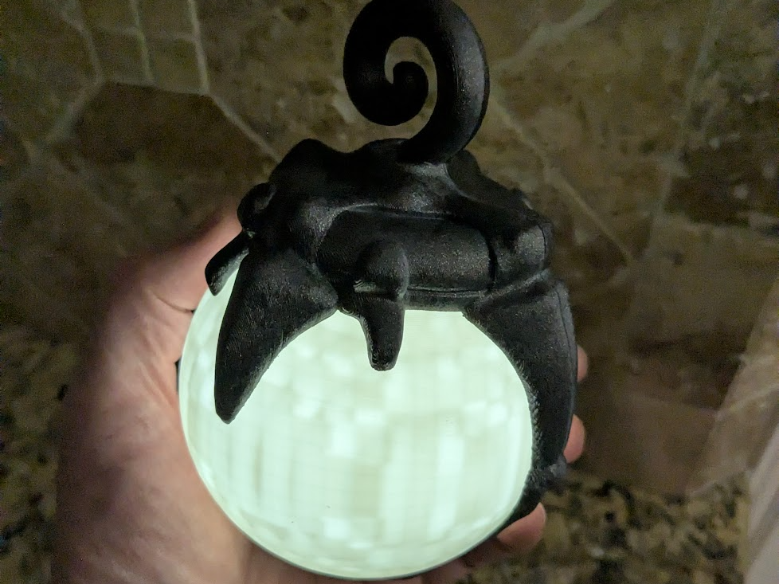
Lumafly Lantern Hollow Knight
I got this recommendation recently online, and it seemed like a fun and interesting build. It is setup so you can insert a little led light inside after you put it together by rotating the inner globe. Tags: Hollow Knight, hollow knight, Silksong, silksong.
View print & download →
Hollow Knight Mask Adult Size Updated Cosplay
I had previously created a “youth size” of this mask , but due to community support, I decided to update it and make it sized for adults. I also made multiple improvements to the quality of the print (*learning*). Notable improvements over the last version: It's bigger.
View print & download →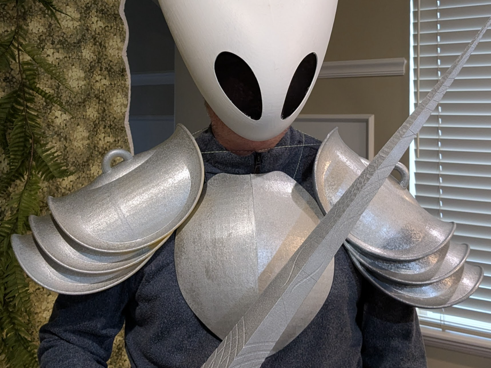
Pure Vessel Armor Shoulder Pauldrons Hollow Knight
Most characters in Hollow Knight have no armor, but the Pure Vessel is an exception (although details of his armor are hard to find). I will add profiles to this model for a breastplate later once it is completed, but wanted to share this first as these are the most iconic part.
View print & download →
The Grimm Mask - Hollow Knight adult & child size
The Grimm from Hollow Knight. This was a lot of fun (and work) to create. As always I study in game images to come up with a design, print out multiple prototypes to test fit, printability, and ease of putting together. Tags: mask, helmet, grimm, Hollow Knight.
View print & download →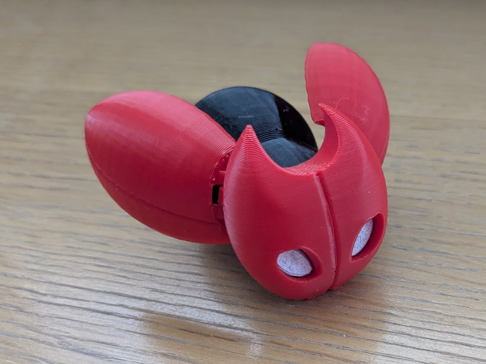
Cogfly Silksong (hollow knight) tool w/ hinge wing
This model was requested a long time ago, but I finally got around to making it. It is a pretty simple print, and I am showing the standard size version (you may want to make it bigger and I think the hinges will work better with a larger size). Tags: cogfly, Silksong, silksong, Hollow Knight.
View print & download →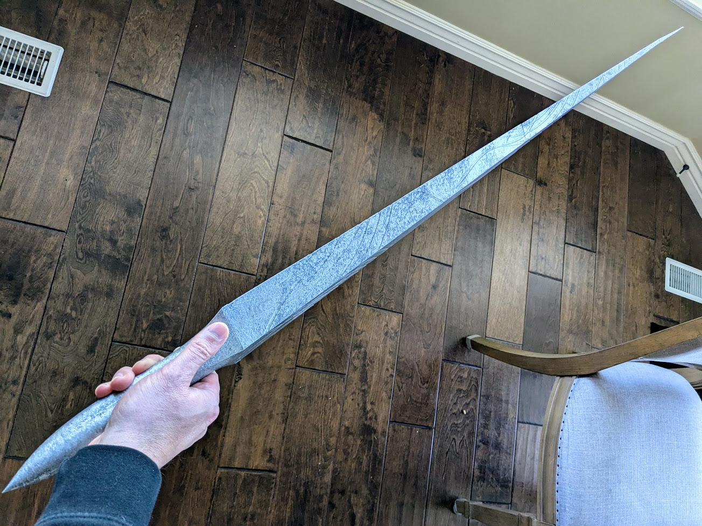
Pure Vessel Sword (Large Size 52") - Hollow Knight
I have learned that whenever making a cosplay weapon, I should just assume people want it BIGGER. Well, this is the bigger version of the Pure Vessel sword from Hollow Knight. Tags: pure vessel, Hollow Knight, hollow knight, sword.
View print & download →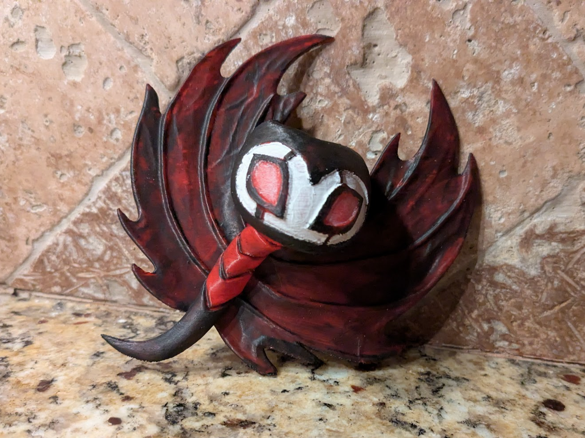
Grimmchild - Hollow Knight tool
A user recently requested this model and it seemed like fun, so I put it together. I am really happy with how it turned out (although I know my painting job on the wings may be somewhat controversial since they are a reddish black instead of a dark grey). Tags: Hollow Knight, hollow knight, Silksong, silksong.
View print & download →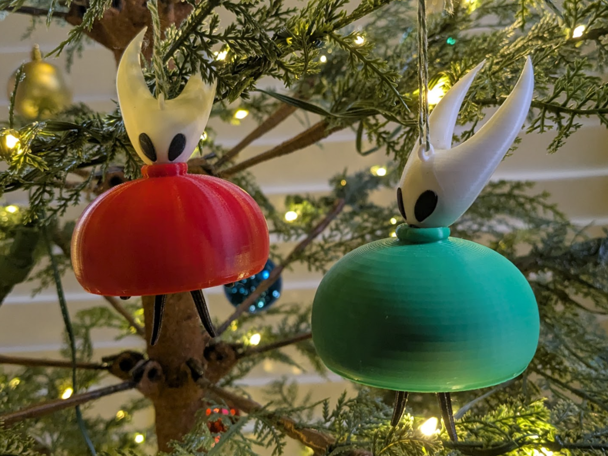
Hornet Christmas Ornament (Silksong) -All printers
Throw away your old Christmas tree balls and replace them with an army of floating Hornets. Print the cape in red or green for maximum Christmas spirit! I created this design as a way of saying thanks for all the support and boosts I received on my Cosplay/Halloween mask designs.
View print & download →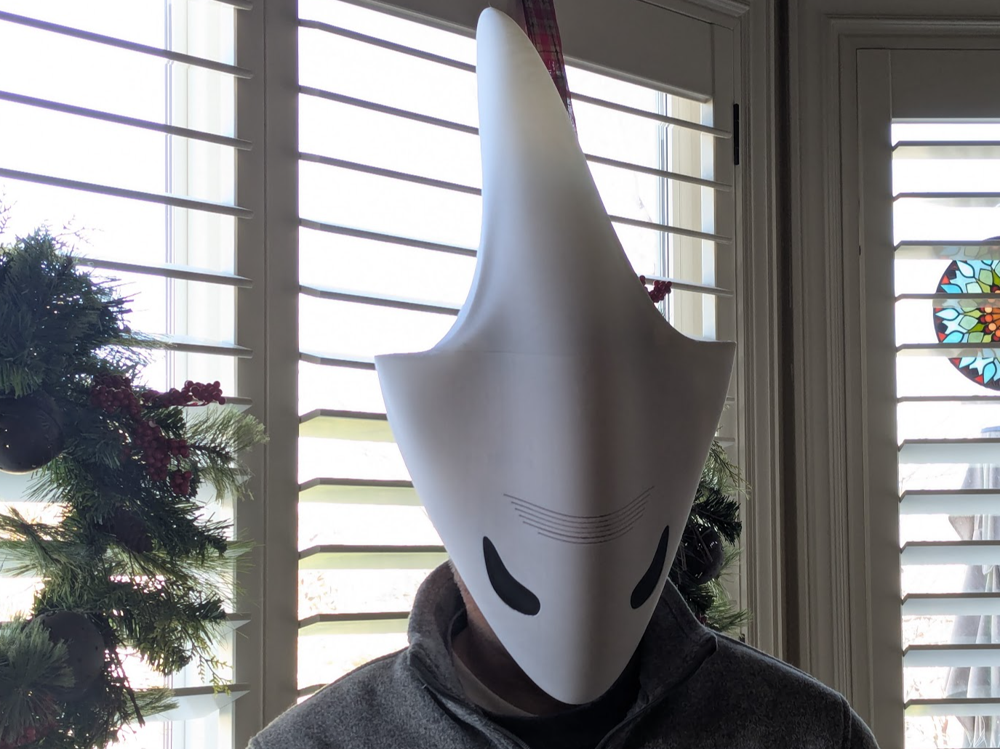
Shakra Mask (Silksong Hollow Knight cosplay)
This mask has been requested a few times, but I put it off because it seemed really challenging. It took 3 versions before I got something I liked. Creating a way for the wearer to see was a very interesting problem because of the position of Shakra's eyes. Tags: shakra, Silksong, silksong, Hollow Knight.
View print & download →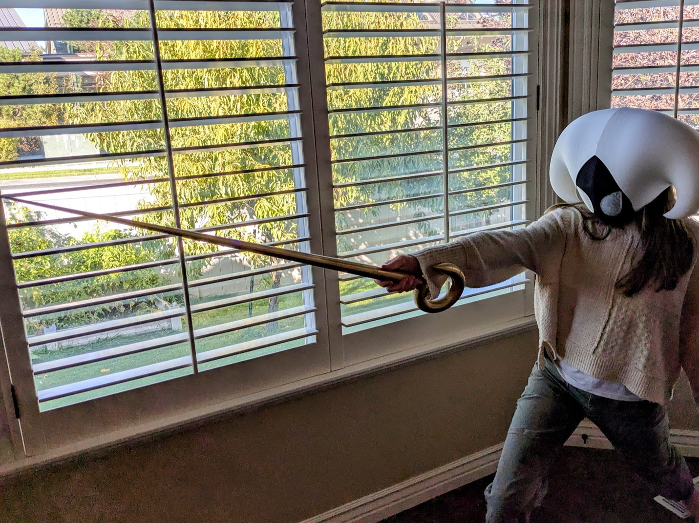
Lace's Sword or pin (Silksong boss fencing sword)
Since I already created the Lace Mask , it was only a matter of time before I needed to create her weapon. Lace is a fencer, so I started with designing her “pin” to resemble the dimensions of a standard foil. Tags: Hollow Knight, hollowknight, hollow knight, Silksong.
View print & download →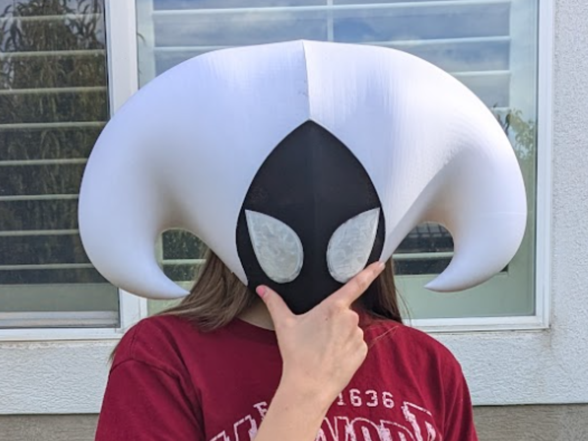
Lace Mask from Silksong (Hollow Knight) Halloween
Playing through Silksong during release week, it was obvious that Lace deserved a 3d printed mask design. This design is sized to fit an adult head and you could scale it down for a child. The challenge with this mask is visibility for the wearer. Tags: silksong, hollow knight, Hollow Knight, mask.
View print & download →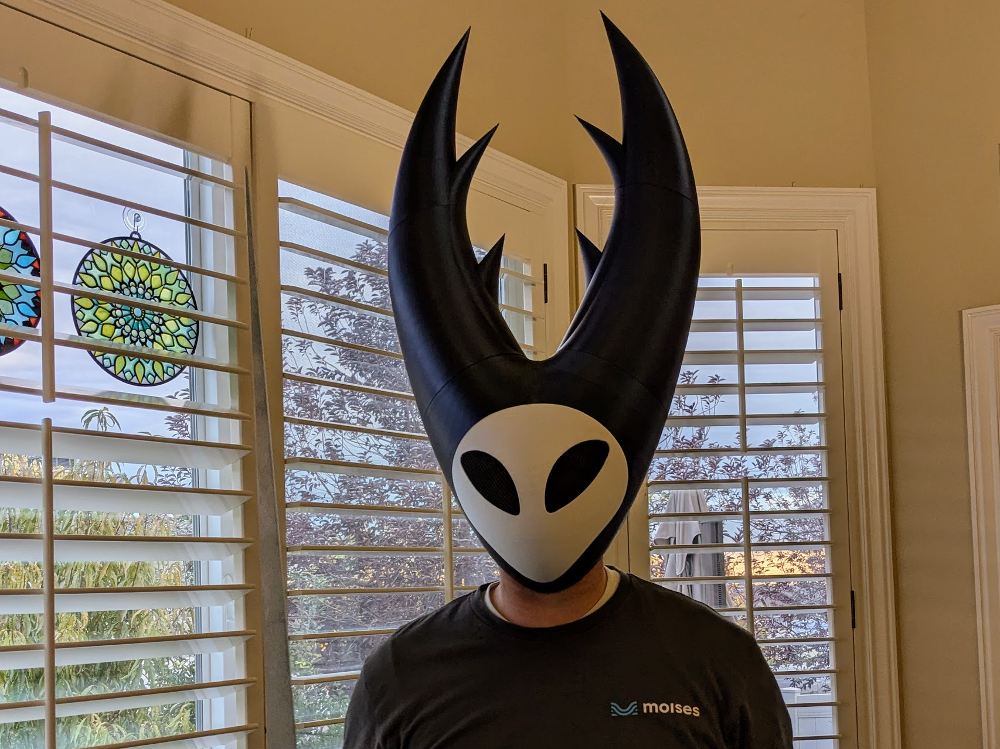
Mantis Lord Mask Adult size (scale down for child)
Mantis Lord mask from the video game Hollow Knight. I took my learnings from previous masks and tried to incorporate that into this design (easy to print, painted on supports, labels for mirrored parts, reduced filament required, etc.). Tags: COSPLAY, CosPlay, Cosplay, cosplay.
View print & download →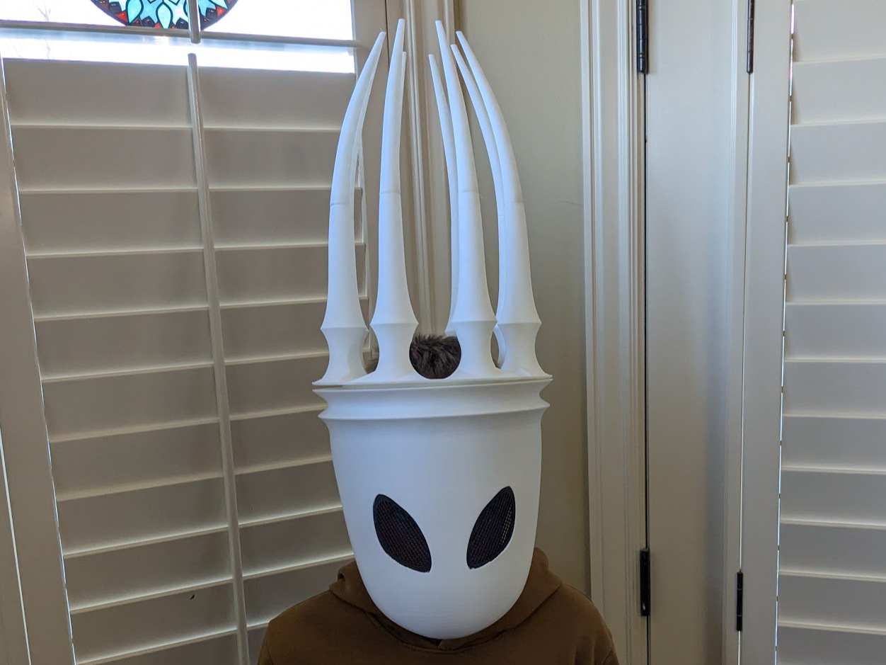
The Pale King or Wyrm- Hollow Knight
The Pale King mask from Hollow Knight. I really like the Pale King mask and the lore he brings to the Hollow Knight game. While I am sure this model won't be particularly popular, it was a fun design challenge that turned out great. Tags: Hollow Knight, hollowknight, pale, pale king.
View print & download →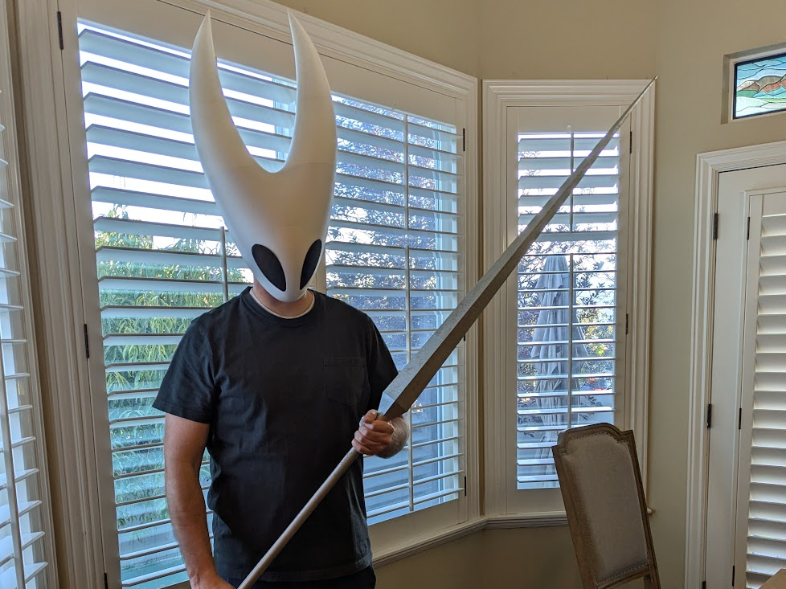
Mantis Lord Lance - Hollow Knight 1/2" PVC Pipe
This is the Mantis Lord's Lance from the Hollow Knight video game. It uses a 54"core of ½" PVC pipe ( the white stuff everyone uses for sprinklers in the US ). Tags: Hollow Knight, hollowknight, hollow knight, Silksong.
View print & download →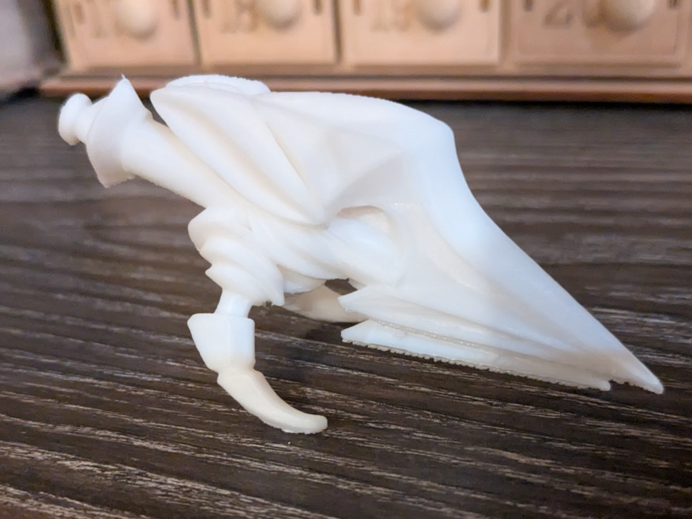
Silkshot - Hornet Silksong Tool - Hollow Knight
Just trying to do a stranger ( user_1042223475 ) a solid by making the silkshot for him. For simple non-functional prints like this, AI tools like Hitem3D are pretty awesome. Tags: Hornet, hornet, Silksong, silksong.
View print & download →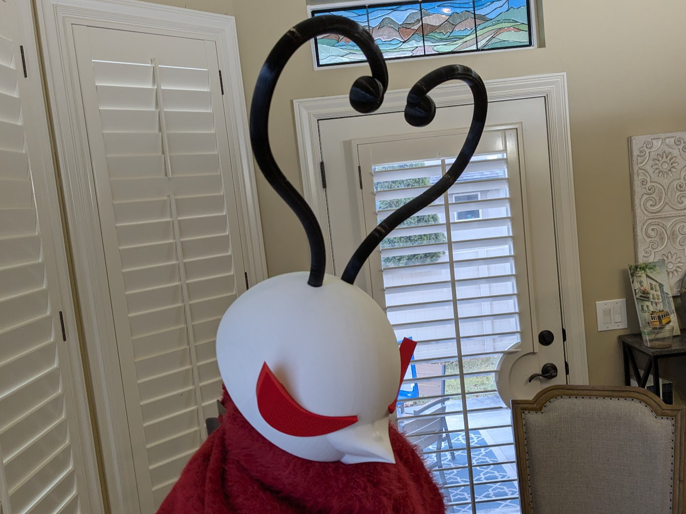
Trobbio Mask - Silk Song Boss Adult Sized
This was not an easy project, the original design is pretty funky and the source material geometry changes a bit depending on the angle. But I think with the right outfit it could make quite an impression (needs a bigger fluffier neck blanket than I was prepared to create).
View print & download →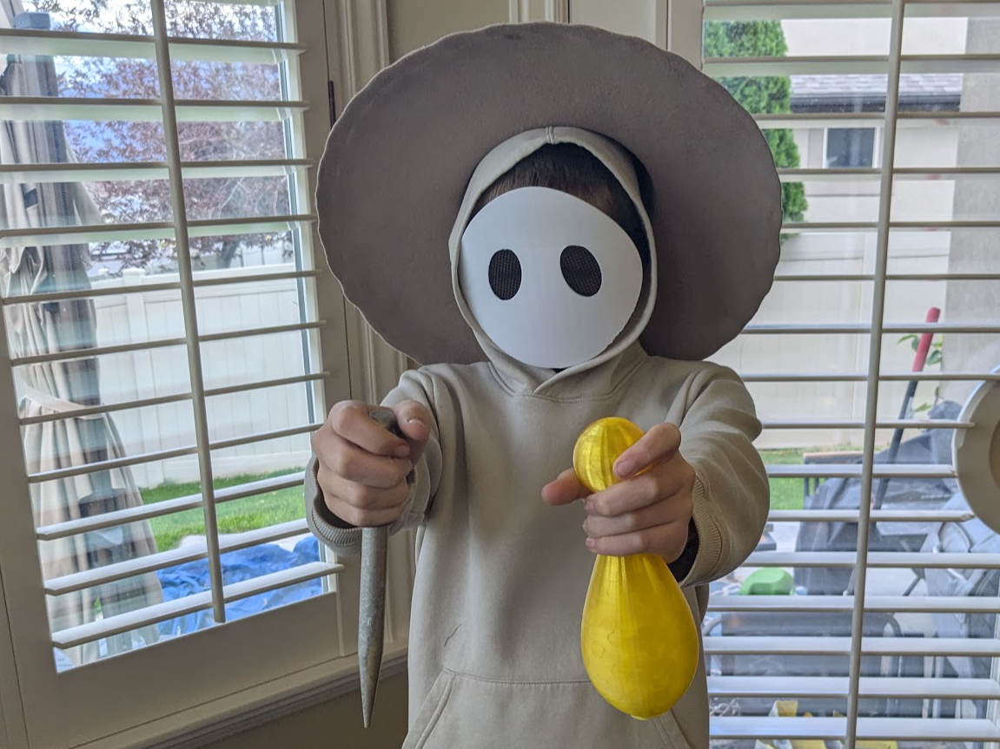
Sherma from Silksong - Bell, pin and mask
If you have played Silksong, there is one character that stands out from the others, Sherma. Despite Hornet being the hero of the game, I think we can all agree that Sherma is what we actually need more of in our world. Tags: Silksong, silksong, Hollow Knight, hollowknight.
View print & download →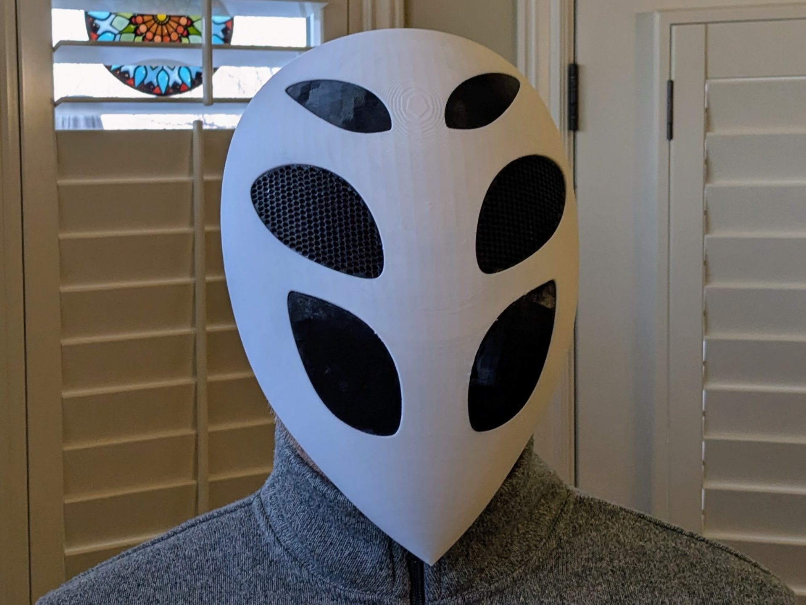
Dreamer Harrah the Beast Mask - Hollow Knight
This is the final dreamer mask, Harrah the Beast. I saved this one for last since it is a bit more complicated than the others. It does have the advantage of the center black voids lining up with your eyes so I could eliminate the slits I did on the other masks. Tags: Hollow Knight, hollow knight, dreamer, mask.
View print & download →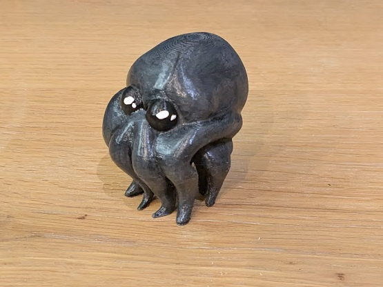
Twisted Bud - Silk Song TPU Stress Ball
Playing Silksong will drive even the stoutest gamer to occasional rage quitting. Which got me thinking.... WWHD (What would hornet do?) Hornet found a stress ball in the Twisted Bud and squeezed her worries away. Tags: Silksong, silksong, twisted, stressball.
View print & download →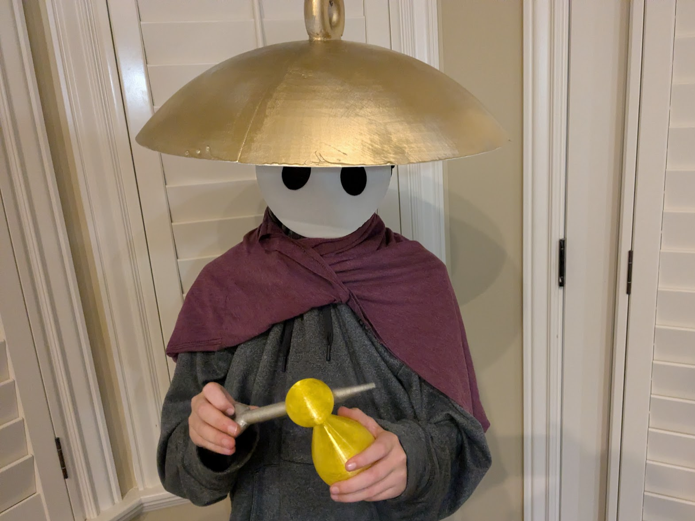
Sherma Hat from Silksong
Finishing up my Sherma costume with this hat. Sherma remains one of my favorite characters in Silksong and I wanted to wrap up his costume before moving on. I recognize that I am almost certainly too late for Halloween, but hopefully this will be still valuable for some of you.
View print & download →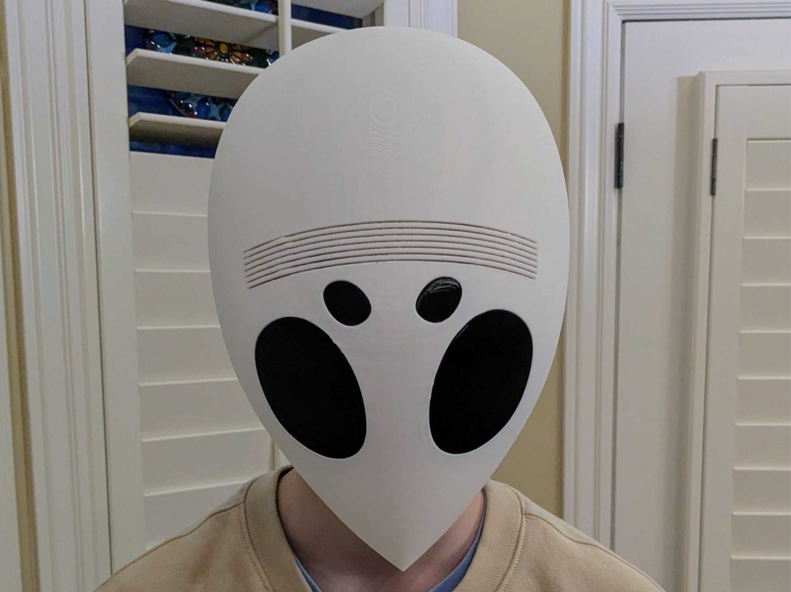
Dreamer Monomon the Teacher Mask - Hollow Knight
This is the second of the three dreamer masks, Monomon the Teacher. I will have the last one done soon. Tags: Hollow Knight, hollow knight, hollow knight 2, COSPLAY.
View print & download →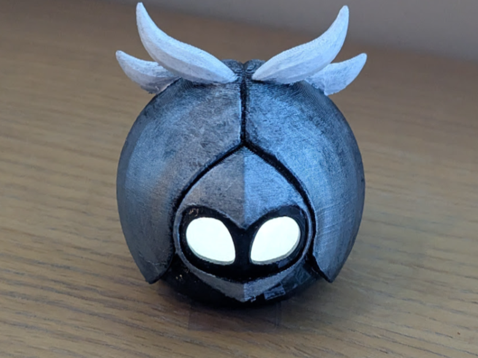
Wingmould - Hollow Knight Creature -Optional Light
I get a number of requests for Hollow Knight related things. Some projects I start and never finish (the phantom mask), others seem uninteresting or unlikely to be relevant to broader audience, and some I just do. Tags: Hollow Knight, hollowknight, Silksong, silksong.
View print & download →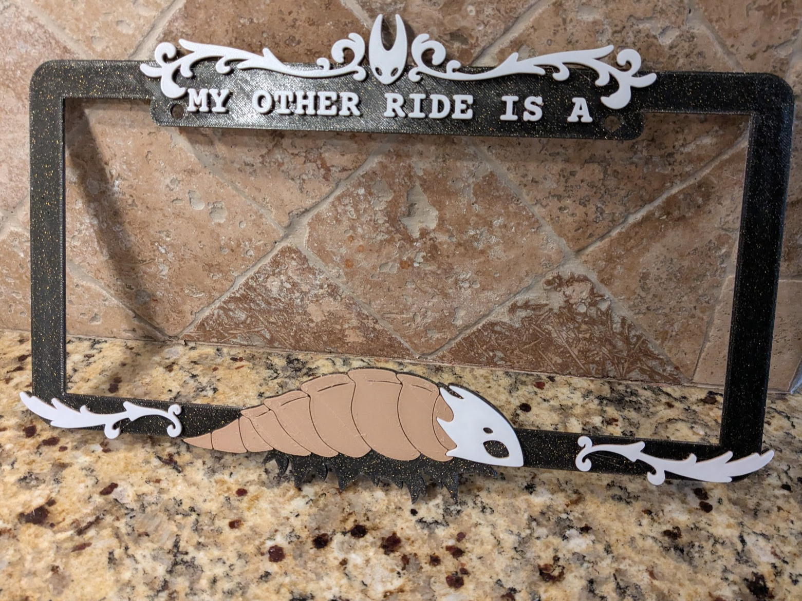
Hollow Knight License Plate Frame - Bell Beast
Hollow Knight inspired US License plate holder for your car. Show your love for Hollow Knight and Silksong with this unique license plate frame. The model is colored by layer to keep waste at a minimum and make it easy for anyone to use it. Tags: Hollow Knight, hollowknight, Silksong, silksong.
View print & download →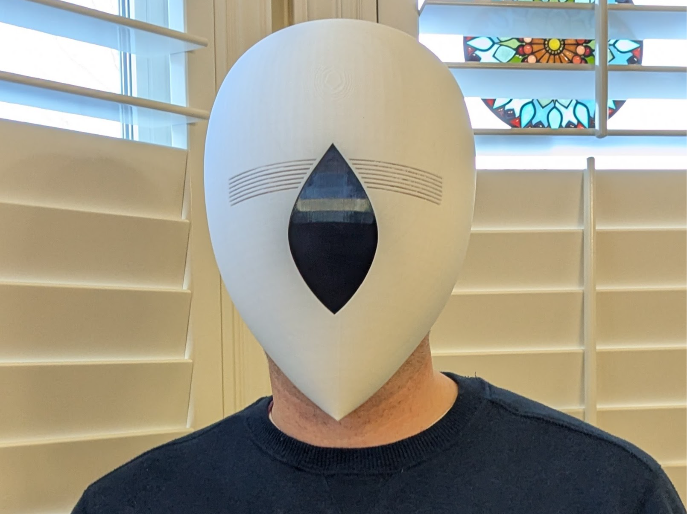
Dreamer Lurien the Watcher Mask - Hollow Knight
This is the first of the three dreamer masks, Lurien the Watcher. I am planning on doing the other two soon and will use the basic design here, but swap out the void holes for the other characters. A few key features: I added slots in the front for visibility. Tags: Hollow Knight, hollow knight, COSPLAY, CosPlay.
View print & download →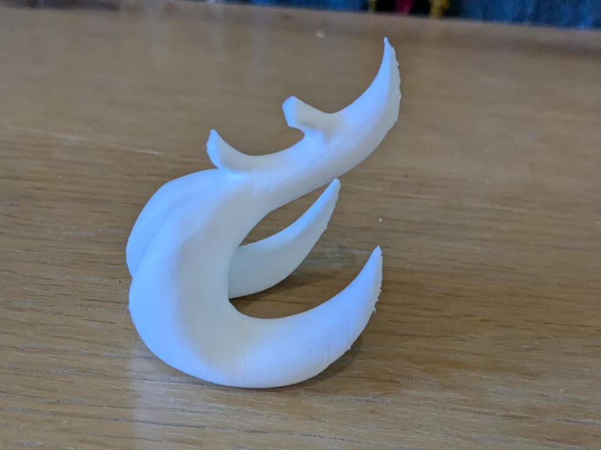
Mantis Claw (Hollow Knight Equipment)
This is for 3DMarco. May he figure out how to climb up walls with this. :) One could argue that I have gotten carried away with Hollow Knight and Silksong related designs… I am sharing the list and links here so you can find them easily, I hope you enjoy them!. Tags: cosplay.
View print & download →